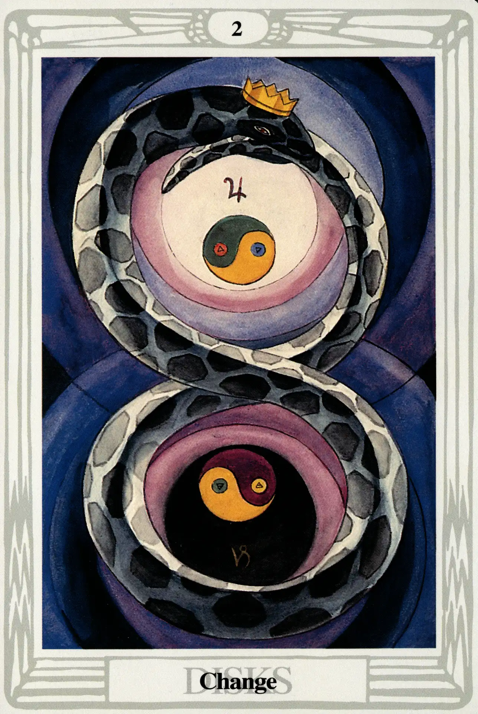

Disks
Two of Disks Change

(Jupiter in Capricorn)
0° to 10° Capricorn
December 22 to December 30
Original Title: Lord of Harmonious Change.
Golden Dawn Model: In the center, a green and gold serpent with its tail
in its mouth forms a figure 8. A hand appears from clouds on the left
side of card and grasps the serpent where the two loops intersect.
Within each loop is a disk, similar to that of the ace. There are no roses in
this card.

Princess Scale for Chokmah: White-flecked red, Blue and Yellow.
The Four Scales for Jupiter: Violet; Blue; rich Purple; Bright Blue, rayed
yellow.
The Four Scales for Capricorn: Indigo; Black; Blue-black; Cold Dark Grey,
nearing Black.
Formula: 2 (Chokmah) of Disks (Assiah) +Jupiter in Capricorn = CHANGE
Even though Jupiter and Capricorn are not usually happy with each other,
this high up on the Tree of Life, their differences are more or less
forgiven. Crowley calls this card “the picture of the complete manifested
Universe, in respect of its dynamics.” 297
Like the twos of the other suits, this card, not the ace, represents the
first manifestation of its element. Disks being earth and, as we recall,
earth being the throne of spirit, we have in a very real sense completed a
great cosmic circuit. “[H]aving got to the bottom, Crowley explains, “one
immediately comes out again at the top. Hence, the card manifests the
symbolism of the serpent of the endless band.” 298 Crowley sings in his
Liber LXV:
Then I beheld myself compassed about with the In finite Circle of
Emerald that encloseth the Universe. 299
As if to suggest the nuclei of the first dividing cells of what soon be
the material universe, two yin-yangs whirl in the center of the two coils
of the serpent; the top rotates to the left and contains within itself the
symbols of fire and water; the bottom one rotates to the right and
contains within itself the symbols of air and earth. Harris tells Crowley
that she paid particular attention to the colors:
No 2 Disks is on the stocks, is the serpent's eye to be red? It is a bit
awkward as there are several colours introduced in the card which do
not belong to Jupiter and Capricorn, I mean the 4 elements colours
and they make inharmonious patches. Did you say anything about
jewels on the serpent? I think you will like him.” 300
See chapter 20 for the general divinatory meanings of this card.